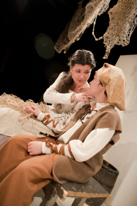

Neskúšajte si líhať do truhly! (Fefe Križanová)
Dôležitú úlohu v živote sv. Jána z Boha si zahrala Františka Križanová, ktorá nazbierala veľa hereckých skúseností a zožala nejeden aplauz práve na GCM-áckych divadelných doskách.
Hrám matku Juana.
To je postava, ktorá veľa kašle.Kašle, pretože ťažko ochorela, žila totiž v zlých sociálnych podmienkach.
Aká je jej diagnóza?Neviem, tipujem to na tuberkulózu, alebo niečo podobne.
Tvoja postava teda kvôli chorobe umiera počas toho, ako Juan putuje s Antoniom?Áno, zomiera od žiaľu , ktorý sa skĺbi s pokročilým štádiom tubery. Už je toho na ňu jednoducho veľa.
Smutný príbeh. Očakávala si takúto postavu?Zdalo sa mi spočiatku trošku divne, keď som si čítala scenár po prvý raz a uvidela som tam vetu: ,,Matka zakašle.“ Pomyslela som si: „Nevadí, veď raz zakašlem, to bude pohoda.“ Že to bude náročnejšie, som si začala uvedomovať až vtedy, keď mi sr. Mária Marthe kázala: ,,Viac kašli, viac kašli!“
 Po záporných postavách, ktoré si doposiaľ (výborne) hrala, si tento raz mala stvárniť láskavú starostlivú maminku. Ako sa ti pozdáva táto úloha?Tuto úlohu som od sr. Márie Marthe dostala ako darček. Povedala mi, že budem najmilšia postava z celej hry, samozrejme, okrem Juanita. Je to akoby náhrada za všetky mrchy, ktoré som doteraz hrala. Uvedomila som si ale, že potvory sa hrajú ľahšie. Keď máš zlú náladu, môžeš si ju vybiť vo svojej úlohe, ale takto musíš byť stále milá.
Ako hodnotíš svoj kostým?Pači sa mi. Je lepši ako ten, čo som mala predtým. V tom minulom som nemohla dýchať a bolo mi v ňom teplo. Tento je pohodlnejší.
Máš nejaký odkaz pre divákov?Nikdy si neskúšajte líhať do truhly.
Ako sa ti umiera?Umiera sa mi zaujímavo. Najprv hľadám svojho syna, vzápätí odchádzam zo scény a líham si do truhly. Musím zostať vážna a nedýchať.
Byť mŕtva je teda náročná úloha...Áno, veľmi náročná. Radšej umrieť už nastálo, lebo ožívanie je komplikované.